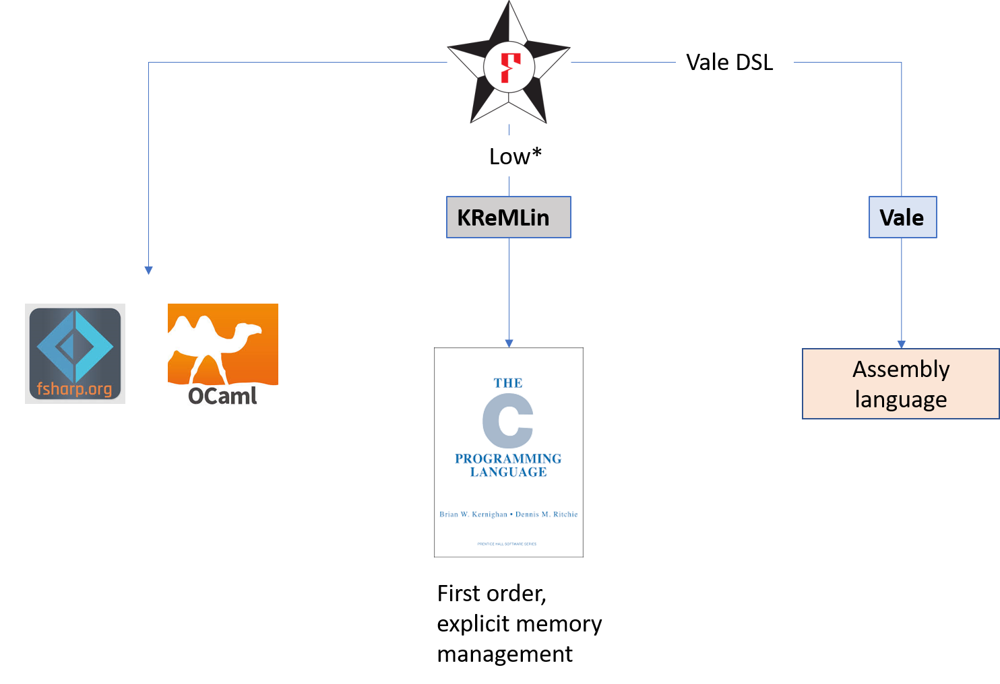

Verified Crypto with F*

Logistics
-
Total duration : 2 hours 30 minutes
-
Rough breakup:
- Aseem : Basic introduction to F* (1hr)
- 10 minutes break
- Aseem : Low-level programming in F* (30mins.)
- 10 minutes break
- Marina : Verified crypto programming in F* (40mins.)
-
Ask questions on Zulip, we have several experts around!
- Son Ho, Natalia Kulatova, Denis Merigoux, Zhe Tao, Théophile Wallez
-
There is a Zulip topic titled “Questions for speakers” in the F* stream, please post any specific questions about the talk, slides, etc. that you would like to see addressed in the Zoom session
-
Update your local clone of the Indocrypt-VerifiedCrypto-Tutorials github repo
Acknowledgements
-
Joint work with several collaborators at Microsoft Research, Inria Paris, Rosario, CMU, UC Davis, …
- many former members, interns, external contributors
-
Resources
What is F*
-
Functional programming language with effects
- like OCaml, F#, Haskell, …
-
Semi-automated verification system using SMT
- like Dafny, FramaC, Why3, Liquid Types, …
-
Expressive core based on dependent type theory
- like Coq, Agda, Lean, Nuprl, …
-
A metaprogramming and tactic framework
for interactive proof and user-defined automation- like Coq, Lean, Nuprl, Isabelle, HOL, etc.
Running F* Programs

Uses of F*
- Projects using F*
- Verified F* code deployed in
- Hyper-V (the virtualization technology used in Microsoft Azure)
- Azure Confidential Consortium (verified Merkle tree for the blockchain)
- Firefox (Mozilla NSS crypto)
- Windows (WinQUIC)
- WireGuard VPN
- Zinc crypto library for Linux
- Tezos and Concordium blockchains
- …
A first taste
-
Write ML-like code
let rec factorial n = if n = 0 then 1 else n * factorial (n - 1) -
Give it a specification, claiming that
factorialis a total function from non-negative to positive integers.val factorial: n:int{n >= 0} -> i:int{i >= 1} -
Ask F* to check it
fstar factorial.fst Verified module: Factorial All verification conditions discharged successfully
Refinement types
type nat = x:int{x>=0}-
Refinements introduced by type annotations (code unchanged)
let rec factorial (n:nat) : nat = if n = 0 then 1 else n * (factorial (n - 1)) -
Logical obligations discharged by SMT (simplified)
n >= 0, n <> 0 |= n - 1 >= 0 n >= 0, n <> 0, factorial (n - 1) >= 0 |= n * (factorial (n - 1)) >= 0 -
Refinements eliminated by subtyping:
nat<:intlet i : int = factorial 42 let f : x:nat{x>0} -> int = factorial
Dependent types
-
Dependent function types (), here together with refinements:
val incr : x:int -> y:int{x < y} let incr x = x + 1 -
Can express pre- and post- conditions of pure functions
val incr : x:int -> y:int{y = x + 1} -
Exercise: Can you find other types for
incr?
Inductive types and pattern matching
-
Inductive datatypes (immutable) and pattern matching
type list a = | Nil : list a | Cons : hd:a -> tl:list a -> list a let rec map (f:a -> b) (x:list a) : list b = match x with | [] -> [] | h :: t -> f h :: map f t -
Lambdas (unnamed, first-class functions)
map (fun x -> x + 42) [1;2;3]
Inductive types and pattern matching
-
Recursive functions over inductive datatypes
type vec a : nat -> Type = | Nil : vec a 0 | Cons : #n:nat -> hd:a -> tl:vec a n -> vec a (n + 1) let rec append (v1:vec a n) (v2:vec a m) : vec a (n + m) = match v1 with | Nil -> v2 | Cons hd tl -> Cons hd (append tl v2) -
Higher order
let rec map (f:a -> b) (v:vec a n) : vec b n = match v with | Nil -> Nil | Cons hd tl -> Cons (f hd) (map f tl) map (fun x -> x + 42) (Cons 1 Nil)
Total functions in F*
-
The F* functions we saw so far were all total
-
Toteffect (default) = no side-effects, terminates on all inputsa -> bis really shorthand fora -> Tot b
val factorial : nat -> nat ~ nat -> Tot nat let rec factorial n = (if n = 0 then 1 else n * (factorial (n - 1))) -
Quiz: How about giving this weak type to factorial?
val factorial : int -> Tot int
let rec factorial n = (if n = 0 then 1 else n * (factorial (n - 1)))
^^^^^
Could not prove termination of this recursive call factorial (-1) loops! (int type in F* is unbounded)
Semantic termination checking
- Based on well-founded ordering on expressions (
<<)- naturals related by
<(negative integers unrelated) - inductives related by subterm ordering
- lex tuples
%[a;b;c]with lexicographic ordering - result of a total function smaller than the function itself (
f x << f)
- naturals related by
- order constraints discharged by the SMT solver
- arbitrary total expression as decreases metric
let rec ackermann (m n:nat) : Tot nat (decreases %[m;n]) = if m=0 then n + 1 else if n = 0 then ackermann (m - 1) 1 else ackermann (m - 1) (ackermann m (n - 1)) - default metric is lex ordering of all (non-function) args
val ackermann: m:nat -> n:nat -> Tot nat
Values and Computations
-
“Values” aka unconditionally total terms
-
Two classes of types
- Value types (
t):int,list int, … - Computation types (
C): conditionally pure, divergent, stateful, …
- Value types (
-
F* effect system encapsulates effectful code
- Pure code cannot call effectful code
- But, via sub-effecting, pure code can be used in effectful contexts
-
Dependent function types of the form:
x:t -> C- F* is call-by-value
- argument can't have side-effects, so value type
-
Two forms of refinement types
- Refined value types:
x:t{p} - Refined computation types …
- Refined value types:
Refined Computation Types
Refined Computation Types
-
Saw this already:
val factorial : nat -> Tot nat -
Can equivalently use pre- and post- conditions for this
val factorial : x:int -> Pure int (requires (x >= 0)) (ensures (fun y -> y >= 0)) -
Each computation type contains
- effect (
Pure), result type (int), spec (e.g. pre and post)
- effect (
-
Totcan be seen as just an abbreviationTot t = Pure t (requires True) (ensures (fun _ -> True))
Intrinsic vs Extrinsic Proofs
-
Intrinsic proof: The type of a term at the “definition site” expresses properties of interest
let rec factorial (n:nat) : Tot nat = if n = 0 then 1 else n * factorial (n - 1) - Extrinsic proof: The type of a term is relatively simple; properties are proven separately from the definition
Lemma: Pure Computations as Extrinsic Proofs
let rec append (#a:Type) (xs ys : list a) : Tot (list a) =
match xs with
| [] -> ys
| x :: xs' -> x :: append xs' yslet rec append_length (#a:Type) (xs ys : list a) :
Pure unit
(requires True)
(ensures (fun _ -> length (append xs ys) = length xs + length ys))
= match xs with
| [] -> () (* length (append [] ys) = length [] + length ys *)
| x :: xs' ->
append_length xs' ys
(* Know recursive call's postcondition: length (append xs' ys) = length xs' + length ys *)
(* To show: length (append (x::xs') ys) = length (x::xs') + length ys *)
(* i.e. length (x::(append xs' ys)) = 1 + length xs' + length ys *)
(* i.e. 1 + length (append xs' ys) = 1 + length xs' + length ys *)- Syntax sugar (
Lemma)let rec append_length_lemma (#a:Type) (xs ys : list a) : Lemma (ensures (length (append xs ys) = length xs + length ys)) = match xs with | [] -> () | x :: xs' -> append_length_lemma xs' ys
Exercise 1: Summing: 0 + 1 + 2 + 3 + …
module Sum
open FStar.Mul
let rec sum_rec (n:nat) : nat =
if n = 0 then 0
else n + sum_rec (n - 1)
let sum (n:nat) : nat = (n * (n + 1)) / 2
(*
* Exercise: remove the admit and complete the proof
*)
let sum_rec_correct_lemma (n:nat)
: Lemma (sum_rec n == sum n)
= admit ()
Verifying pure programs
Variant #3: extrinsically using proof terms
let rec preservation (#e #e':exp) (#g:env) (#t:typ)
(ht:typing g e t)
(hs:step e e')
: Tot (typing g e' t) (decreases ht) =
match hs with
| SBeta tx e1' e2' -> substitution_beta h2 (TyLam?.hbody h1)
| SApp1 e2' hs1 -> TyApp (preservation h1 hs1) h2
| SApp2 e1' hs2 -> TyApp h1 (preservation h2 hs2)let rec progress (#e:exp) (#t:typ)
(h:typing empty e t)
: Pure (e':exp & step e e')
(requires (~ (is_value e)))
(ensures (fun _ -> True)) (decreases h) =
match h with
| TyApp #g #e1 #e2 #t11 #t12 h1 h2 ->
match e1 with
| ELam t e1' -> (| subst (sub_beta e2) e1', SBeta t e1' e2 |)
| _ -> let ExIntro e1' h1' = progress h1 in
(| EApp e1' e2, SApp1 e2 h1' |)a- Note: match exhaustiveness check also semantic (via SMT)
Enforcing abstractions via Interfaces
Stack.fsti
module Stack
val stack : Type0
val empty : stack
val is_empty (s:stack) : bool
val push (s:stack) (x:int) : stack
val pop (s:stack{~ (is_empty s)}) : stack
val top (s:stack{~ (is_empty s)}) : int
A client of this interface
StackClient.fst
module StackClient
open Stack
let some_function (s:stack) = if is_empty s then ...
An implementation using lists
Stack.fst
module Stack
module Stack
type stack = list int
(*
* Exercise 1 : implement the rest of the interface functions
* from Stack.fsti
*)
(*
* Exercise 2 : enhance the interface Stack.fsti,
* and if required Stack.fst, with additional specs
* so that StackClient.fst verifies
*)
Clients cannot break abstraction
StackClientBad.fst
module StackClientBad
open Stack
let some_function_bad (s:stack) = if s = [] then ... (* ERROR *)